<html>
<head>
<title>Chenqing Zong, Yujie Zhang, Kazuhide Yamamoto, Masashi Sakamoto &amp; Satoshi Shirai, NLPRS-2001, November 27-29, 2001</title>
<meta http-equiv="content-type" content="text/html; charset=iso-8859-1">
</head>

<body bgcolor=#ffffff link=#0000ff vlink=#0000ff alink=#0000ff>

<div align=center>
<font size=+3>Approach to Spoken Chinese Paraphrasing Based on Feature Extraction</font>
<br><br>

<font size=+2>Chengqing Zong<sup>+*</sup>, Yujie Zhang<sup>*</sup>, Kazuhide Yamamoto<sup>*</sup>, Masashi Sakamoto<sup>*</sup> and Satoshi Shirai<sup>*</sup></font>
<br><br>

<font size=+1><sup>+</sup> National Laboratory of Pattern Recognition, Institute of Automation, CAS</font>
<br>
<font size=+1>P. O. Box 2728, Beijing 100080, China</font>
<br>
<font size=+1> <strong><u>cqzong@nlpr.ia.ac.cn</u></strong></font>

<br><br>

<font size=+1><sup>*</sup> ATR Spoken Language Translation Research Laboratories</font>
<br>
<font size=+1>2-2-2 Hikaridai Seika-cho, Soraku-gun, Kyoto 619-0288, Japan</font>
<br>
<font size=+1> <strong><u>{yujie.zhang, masashi.sakamoto, satoshi.shirai}@atr.co.jp</u></strong></font>
</div>

<br><br>

<h2>Abstract</h2>
<p>
This paper presents an approach to spoken Chinese language paraphrasing 
based on feature extraction and techniques of language generation. 
In this approach, an input utterance is first analyzed in terms of phrase structure, dependency of chunks, etc., 
by using multiple methods. 
Then, the main features of the input utterance are extracted, and the extraction results are represented by a frame. 
Finally, other possible expressions of the input are generated based on the analysis results by different methods. 
Preliminary results are shown in the paper.
</p>

<br><br>

<div align=center>
<font size=-1>
[ In <i>Proceedings of NLPRS-2001</i>, pp.457-462 (November, 2001). ]
</font>
</div>

<br><br>

<hr size=2>

<h3>INDEX</h3>
<table border=0 cellpadding=0>
<tr><td rowspan=17>&nbsp;&nbsp;&nbsp;&nbsp;</td>
    <td><a href="c35.html#chap-1">1 Introduction</a></td></tr>
<tr><td><a href="c35.html#chap-2">2 Problems in Paraphrasing and Our Countermeasures</a></td></tr>
<tr><td>&nbsp;&nbsp;<a href="c35.html#chap-2.1">2.1 Related Works on Paraphrasing</a></td></tr>
<tr><td>&nbsp;&nbsp;<a href="c35.html#chap-2.2">2.2 Problems and Countermeasures</a></td></tr>
<tr><td>&nbsp;&nbsp;<a href="c35.html#chap-2.3">2.3 Why We Use the Approach</a></td></tr>
<tr><td><a href="c35.html#chap-3">3 System Implementation</a></td></tr>
<tr><td>&nbsp;&nbsp;<a href="c35.html#chap-3.1">3.1 Analyzer</a></td></tr>
<tr><td>&nbsp;&nbsp;<a href="c35.html#chap-3.2">3.2 Frame Representation</a></td></tr>
<tr><td>&nbsp;&nbsp;<a href="c35.html#chap-3.3">3.3 Generating Expressions</a></td></tr>
<tr><td><a href="c35.html#chap-4">4 Experimental Results</a></td></tr>
<tr><td>&nbsp;&nbsp;<a href="c35.html#chap-4.1">4.1 Parsing Results</a></td></tr>
<tr><td>&nbsp;&nbsp;<a href="c35.html#chap-4.2">4.2 Dependency Analysis Results</a></td></tr>
<tr><td>&nbsp;&nbsp;<a href="c35.html#chap-4.3">4.3 Paraphrasing Results</a></td></tr>
<tr><td><a href="c35.html#chap-5">5 Conclusion</a></td></tr>
<tr><td><a href="c35.html#chap-6">6 Acknowledgements</a></td></tr>
<tr></tr>
<tr><td>&nbsp;&nbsp;<a href="c35.html#ref">References</a></td></tr>
</table>

<br><br>

<hr size=2>

<a name="chap-1"><h2><font color=#ff0000>1 Introduction</font></h2></a>

<p>
Although many approaches have been proposed to cope with spoken language phenomena and many strategies 
for translation have been developed, spoken language translation (SLT) systems still suffer from performance limitations. 
One of the key problems involves deciding how to robustly parse the input utterances. 
If we examine the techniques employed by human interpreters, we can see that paraphrasing is unavoidable at times. 
When an interpreter is unable to directly translate an utterance due to an ill-formed expression or an even worse problem, 
he or she may have to paraphrase the utterance into other expressions in his/her mind before translating the utterance.
</p>
<p>
To cope with this effect, <a href="c35.html#ref8">Yamamoto et al. (2001)</a> proposed the Sandglass SLT paradigm. 
This paradigm separates the complicated parsing procedure in the Sandglass system from the translation module 
and explains the meaning of an input utterance in the source language itself. 
Accordingly, it is possible to employ a simple transfer to convert the paraphrased input utterance into the target language. 
The main goal of the paraphrasing module is to make it easy to get correct translation, 
especially for complicated utterances.
</p>
<p>
In this paper, we present an approach to Chinese utterance paraphrasing based on feature extraction. 
In Section 2, the related works on paraphrasing are briefly reviewed, 
and the problems and our countermeasures are introduced. 
In Section 3, the implementation of an experimental system is described in detail. 
In Section 4, the experimental results are shown. Finally, Section 5 gives concluding remarks.
</p>

<br><br>

<hr size=2>

<a name="chap-2"><h2><font color=#ff0000>2 Problems in Paraphrasing and Our Countermeasures</font></h2></a>

<br><br>

<hr size=2>

<a name="chap-2.1"><h2><font color=#ff0000>2.1 Related Works on Paraphrasing</font></h2></a>

<p>
<a href="c35.html#ref2">Chandrasekar et al. (1996)</a> presented ways to simplify long and complicated sentences 
by a Finite State Grammar (FSG) based approach and the Supertagging (DSM) model. 
In their method, punctuation marks and relative pronouns are necessary to define a set of rules 
that map from the given sentence patterns to simpler sentences patterns. 
Unfortunately, in SLT systems there are no punctuation marks to use because all of the sentences 
that the system's paraphraser processes are from the system's speech recognizer, 
which does not generally provide punctuation marks. 
Furthermore, the Chinese language does not use relative pronouns to indicate articulation points.
</p>
<p>
<a href="c35.html#ref3">Dras (1997)</a> introduced several methods to represent paraphrases by using synchronous TAGs. 
These methods, however, closely depend on the synchronous TAGs 
and require a fairly well parsed syntactic structure of the input. 
But in SLT systems, it is usually very difficult to parse an utterance into an adequate syntactic structure, 
especially when the input contains noisy words.
</p>
<p>
<a href="c35.html#ref1">Boguslavsky et al. (2000)</a> introduced synonymous paraphrasing of sentences, 
but did not address structure rewriting. 
<a href="c35.html#ref5">McKeown (1983)</a> described a paraphraser for a natural language question-answering system (CO-OP), 
but the system was only syntactic based. 
In addition, the method was found to have limitations in spoken language paraphrasing. 
<a href="c35.html#ref6">Sato (1999)</a> and <a href="c35.html#ref4">Kondo <i>et al.</i> (2001)</a> described methods 
to paraphrase Japanese technical papers' titles and simple Japanese sentences, respectively.
</p>
<p>
All of the research works mentioned above have provided us with very beneficial cues 
for paraphrasing the spoken Chinese language. 
Unfortunately, before we started our work, there was no reported work 
that specially addressed the Chinese language paraphrasing.
</p>

<br><br>

<hr size=2>

<a name="chap-2.2"><h2><font color=#ff0000>2.2 Problems and Countermeasures</font></h2></a>

<p>
In a paraphrasing system (see Fig. 1), the input and output should comply with the following policy:
</p>
<p>
<strong>The same language:</strong> the output should use
the same language as the input.
</p>
<p>
<strong>The same semantics:</strong> the output should
have (almost) the same meanings as the input.
</p>
<p>
<strong>Simplification:</strong> in general, the output
should have simple and well-formed expressions,
especially when the input is ill-formed.
</p>
<p>
Accordingly, the paraphraser has to tackle at least the following two problems:
</p>
<p>
<ul>
<li> How to determine the meaning of the input utterance.
<li> How to express this meaning by using other expressions that are simple and well-formed.
</ul>
</p>

<p>
<table border=3 cellpadding=1 cellspacing=1 align=center>
<tr><td>
<table border=0 cellpadding=1 cellspacing=1 align=center>
<tr><td><br></td></tr>
<tr><td align=right>Input &nbsp;&nbsp;</td>
    <td rowspan=3><table border=1 cellpadding=1 cellspacing>
	<tr><td><br>&nbsp; Paraphraser &nbsp;<br><br></td></tr>
	</table>
    </td>
    <td>&nbsp;&nbsp; Output</td></tr>
<tr><td>&nbsp; 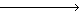 </td><td>  &nbsp;</td></tr>
<tr><td><br></td></tr>
<tr><td><br></td></tr>
</table>
</td></tr>
</table>
<div align=center><strong><i>
Figure 1. A Paraphraser
</i></strong></div>
</p>

<p>
Like to develop a machine translation system, several candidate approaches can be used. 
The pattern based approach is one choice. 
This method is easy to realize and the speed is high, but the generality of the method is often limited. 
If the types of input utterances vary greatly and there are many unseen types of utterances, 
the performance of a system typically degrades. 
The statistical approach is another choice. 
In this method, paraphrasing is treated as just a procedure of translation based on the statistical approach. 
The only difference is that the paraphrasing is done within the same language 
rather than a translation between two different languages. 
Unfortunately, the statistical method needs very large-scale tagged corpora. 
Specifically, it is not practical to employ a costly statistic based paraphraser to rewrite input in a real-time SLT system.
</p>
<p>
Based on the analysis above, we proposed an approach to paraphrasing Chinese utterances based on feature extraction. 
The main ideas of the approach may be described as follows:
</p>
<p>
<table border=0 cellpadding=1 cellspacing=1 align=center>
<tr><td rowspan=4>&nbsp;&nbsp;</td>
    <td valign=top>1) &nbsp;</td><td>Segment the complex utterances into simple parts. 
	Each part is separately paraphrased by using the following steps.</td></tr>
<tr><td valign=top>2)</td><td>Jointly parse each separated part by multiple analyzers including a phrase parser, 
	chunk dependency analyzer, and special chunk recognizer.</td></tr>
<tr><td valign=top>3)</td><td>Extract the main features of the analyzing part, including the expression type 
	(interrogative or declarative expressions, etc.), syntactic features, semantic features and so on.</td></tr>
<tr><td valign=top>4)</td><td>Generate other possible expressions of each part by using different methods.</td></tr>
</table>
</p>

<br><br>

<hr size=2>

<a name="chap-2.3"><h2><font color=#ff0000>2.3 Why We Use the Approach</font></h2></a>

<p>
Our approach based on feature extraction is mainly grounded on the following points:
</p>
<p>
a) Almost all analysis results in the approach are useful and beneficial 
for the subsequent translation module in an SLT system. 
For example, the expression type, syntactic structures, and the relations among the chunks, 
are all necessary pieces of information for the translation module. 
This means that the paraphraser could not only provide alternative expressions of an input utterance 
to the translation module but also reduce much of the translation module's analysis work.
</p>
<p>
b) The possible expressions are generated under the guidance of analysis results. 
To a certain extent, the expressions may be generated with high correctness and well-formed structure.
</p>
<p>
c) The approach is not limited by any conditions. 
That is, the input utterances may be any possible expressions. 
This ensures that the approach is capable of processing the spoken Chinese language.
</p>
<p>
d) The expressions are generated by different methods. 
The input is not only paraphrased based on the parsing results but also based on the other features. 
This helps the input to be paraphrased correctly even if the input is parsed incorrectly.
</p>

<br><br>

<hr size=2>

<a name="chap-3"><h2><font color=#ff0000>3 System Implementation</font></h2></a>

<p>
Based on the ideas presented above, we have implemented an experimental system 
for paraphrasing Chinese utterances in the domain of hotel reservation. 
This section describes the key points in implementation of the experimental system in detail.
</p>

<br><br>

<hr size=2>

<a name="chap-3.1"><h2><font color=#ff0000>3.1 Analyzer</font></h2></a>

<p>
In our approach, the analyzer includes six modules: 
(1) time chunk recognizer implemented by an FST (Finite State Transducer); 
(2) phrase parser employing PCFG (Probabilistic Context Free Grammar) rules; 
(3) chunk dependency analyzer achieved by an FST; 
(4) utterance type analyzer based on recognition rules; 
(5) keyword spotting analyzer achieved by an FST; and (6) tense analyzer also achieved by an FST. 
In this sub-section, we describe (1), (2) and (3).
</p>
<p>
<ul>
<li> <strong>Time Phrase and Quantifier Recognizer</strong>
</ul>
</p>
<p>
In the spoken Chinese language used in the hotel reservation domain, time phrases and quantifiers appear very frequently. 
According to our statistical results of 64,800 utterances in the domain of hotel reservation, 
21.98% of utterances contain quantifiers or time phrases. 
Furthermore, the time phrases and quantifiers may act as different constituents in different contexts, 
such as an adverbial adjunct, object, or predicate. 
Accordingly, the time phrases and quantifiers of each input are recognized first by our analyzer before parsing.
</p>
<p>
The time phrase here mainly refers to a number related time expression, 
such as '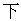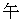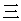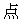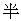 (3:30 in the afternoon)' 
or '7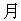16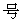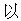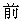 (before July 16)'. 
Other time expressions are recognized by the phrase parser.
</p>
<p>
The number related time expression is recognized by an FST(<i>time</i>), 
which accepts only the following three types of words: 
(a) temporal noun (NT); (b) cardinal number (CD); and (c) the classifier (Mt). 
The set of the three types of words is signed as <i>W<sub>a</sub></i>. 
When a <i>Word<sub>i</sub></i>  <i>W<sub>a</sub></i> appears in the utterance under analysis, 
the FST(time) starts to work. 
In the case of <i>Word<sub>i</sub></i> 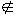 <i>W<sub>a</sub></i>, 
the FST(<i>time</i>) is stopped and the time chunk is marked.
</p>

<p>
<table border=3 cellpadding=1 cellspacing=1 align=center>
<tr><td>
<table border=0 cellpadding=1 cellspacing=1>
<tr align=center><td>&nbsp;</td>
    <td aligh=right><i>S<sub>i</sub></i><br><br><br></td>
    <td><br><br></td>
    <td><br><br>NT|CD|Mt<br>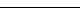</td>
    <td><br><br>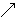</td>
    <td align=left><i>S<sub>i+1</sub></i><br><br><br></td>
    <td>&nbsp;</td></tr>
</table>
</td></tr>
</table>
<div align=center><strong><i>
Figure 2. FST(<i>time</i> )
</i></strong></div>
</p>

<p>
According to our experimental results, 
the FST(<i>time</i>) processing of the time phrases and quantifiers was 65.6% completely correct, 
17.2% partially correct but with no error, and 16.1% not processed. 
The error ratio was 1.1%, and the accuracy of the parser improved 6.5% by using the FST(<i>time</i>) (see Section 4).
</p>
<p>
<ul>
<li><strong>Phrase Parser</strong>
</ul>
</p>
<p>
After the recognition of the time phrases, the input is segmented into <i>n</i>+1 parts by <i>n</i> 
( <i>n</i> is an integer and <i>n</i> [[$(C!C(B]] 0 ) time phrases. 
Each part is parsed by employing PCFG rules. 
Although there are large differences between the spoken Chinese language and the written Chinese language, 
we think these differences are mainly reflected at the sentence level, e.g., 
different orders of constituents containing redundant words in spoken Chinese expressions. 
Phrase construction in spoken Chinese and that in written Chinese follow the same policy. 
Accordingly, the PCFG rules employed in our system are directly extracted 
from the Penn Chinese Treebank (<a href="c35.html#ref7">Xia, 2000</a>). 
All of the rules comply with the condition of <sub>i</sub>P(LHS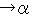<sub>i</sub>)=1. For example:
</p>
<p>
<table border=0 cellpadding=1 cellspacing=1>
<tr><td rowspan=3>&nbsp;&nbsp;&nbsp;&nbsp;</td>
    <td>NN NN  NP, 1.00</td></tr>
<tr><td>MSP VP  VP, 0.94</td></tr>
<tr><td>MSP VP  NP, 0.06</td></tr>
</table>
</p>
<p>
In our system, the target of the parser is to recognize phrases rather than whole sentences.
</p>
<p>
<ul>
<li> <strong>Chunk Dependency Analyzer</strong>
</ul>
</p>
<p>
The chunk dependency is analyzed by the FST(<i>chunk</i>), which treats a predicate as the center of an analyzed part. 
The dependency between the predicate and other chunks are divided into nine types as shown in <i>Table</i> 1.
</p>
<p>
Since the task of the paraphraser is not translation, the dependency is not divided to produce fine details. 
Some chunks are distinguished by their positions, e.g., far/near adverbial adjunct and pre-/post-SPV.
</p>
<p>
In the system, the predicate is recognized first, and the recognizer gives the most plausible candidate as the predicate. 
The dependencies between the predicate and other chunks are analyzed by the following algorithm.
</p>
<p>
<i>Step 1. If there is only one predicate candidate, 
	search for the subject and adverbial adjunct at the left of the predicate candidate 
	and then determine the complement, object, quantifier, etc., at the right of the candidate predicate.</i>
</p>
<p>
<i>Step 2. If there are n (n>1) predicate candidates VP<sub>i</sub> (i =1 .. n), perform the following operations:</i>
<table border=0 cellpadding=1 cellspacing=1
<tr><td rowspan=4>&nbsp;&nbsp;</td>
    <td valign=top><i>1)</i></td>
    <td><i>Determine the subject and adverbial adjunct at the left of VP<sub>1</sub>;</i></td></tr>
<tr><td valign=top><i>2)</i></td>
    <td><i>If VP<sub>1</sub> cannot take an object, treat the part after VP<sub>1</sub> as another processing unit, 
	signed as PART-X;</i></td></tr>
<tr><td valign=top><i>3)</i></td>
    <td><i>If VP1 is allowed to take an object, determine the object, complement, quantifier, etc., 
	after VP<sub>1</sub> but before VP<sub>2</sub> and treat other parts as another processing unit PART-X;</i></td></tr>
<tr><td valign=top><i>4)</i></td>
    <td><i>For others cases: (a) VP<sub>1</sub> may take two objects; (b) VP<sub>1</sub> may take a clause as its object; 
	(c) VP<sub>1</sub> may take a noun as its object but the noun (pivot word) can act 
	as the agent of another following verb; and (d) VP<sub>1</sub> is the judgment verb. 
	Determine the possible sentence according to different situations and 
	treat the remainder of the input as another processing unit PART-X.</i></td></tr>
</table>
</p>
<p>
<i>Step 3. Treat PART-X as the input and repeat Step 1 and Step 2 until all chunks have been analyzed.</i>
</p>
<p>
<i>Step 4. Record all possible dependencies and fill the Frame (see Sub-section 3.2).</i>
</p>
<p>
<div align=center><strong><i>
Table 1. Dependency Relations
</i></strong></div>
<table border=3 cellpadding=1 cellspacing=1 align=center>
<tr><td><strong><i>Marks</i></strong></td><td><strong><i>Types</i></strong></td></tr>
<tr><td>SUB</td><td>Subject</td></tr>
<tr><td>Q-NUM</td><td>Quantifier</td></tr>
<tr><td>COMP</td><td>Complement</td></tr>
<tr><td>D-OBJ</td><td>Direct object</td></tr>
<tr><td>I-OBJ</td><td>Indirect object</td></tr>
<tr><td>ADV</td><td>Adverbial adjunct</td></tr>
<tr><td>SPV</td><td>Sequential predicates<a name="rfn1" href="c35.html#fn1"><sup>1</sup></a></td></tr>
<tr><td>PW</td><td>Pivot word<a name="rfn2" href="c35.html#fn2"><sup>2</sup></a></td></tr>
<tr><td>CPW</td><td>Complement of pivot word</td></tr>
</table>
</p>

<br><br>

<hr size=2>

<a name="chap-3.2"><h2><font color=#ff0000>3.2 Frame Representation</font></h2></a>

<p>
According to the description above, an input utterance is analyzed into <i>n</i> (<i>n</i> 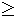 1) parts, 
and each part is mapped into a frame.
</p>

<p>
<table border=3 cellpadding=1 cellspacing=1 align=center>
<tr><td>
<table border=0 cellpadding=1 cellspacing=1>
<tr align=center><td>Chunk ... ... Chunk </td><td>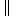</td><td> Chunk ... ... Chunk</td><td>... ...</td></tr>
<tr align=center><td>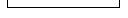<br></td><td></td><td><br></td></tr>
<tr align=center><td>Frame<sub>1</sub></td><td></td><td>Frame<sub>2</sub></td></tr>
</table>
</td></tr>
</table>
<div align=center><strong><i>
Figure 3. Chunks to Frame
</i></strong></div>
</p>

<p>
A Frame consists of two parts, which we call Head and Body. 
The Head records the main features of the analyzed part, including the part's type, keywords, tense, and attribute. 
Type here refers to: (1) interrogative, (2) declarative, (3) greeting, or (4) simple reply. 
The attribute indicates the role that the part plays in the entire input. 
It may be a condition marked by Chinese words '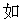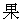 (if)', '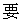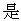 (suppose)', etc., 
or a reason clause marked by the Chinese words like '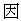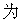 (because)'.
</p>

<p>
<table border=3 cellpadding=1 cellspacing=1 align=center>
<tr><td>
<table border=0 cellpadding=1 cellspacing=1>
<tr><td rowspan=14 valign=top>Frame:</td>
    <td rowspan=4 valign=top>HEAD</td>
    <td>: Type {Interrogative/...}</td></tr>
<tr><td>: Keywords {Word<sub>1</sub>/Positon, ...}</td></tr>
<tr><td>: Tense {Present/Past/...}</td></tr>
<tr><td>: Attribute {Condition/...}</td></tr>
<tr><td rowspan=10 valign=top>BODY</td>
    <td>: Subject;</td></tr>
<tr><td>: Adverbial<sub>1</sub> / Adverbial<sub>2</sub> ...;</td></tr>
<tr><td>: Predicate;</td></tr>
<tr><td>: Object<sub>1</sub>  Sub-Body;</td></tr>
<tr><td>: Object<sub>2</sub>;</td></tr>
<tr><td>: Quantity;</td></tr>
<tr><td>: Complement;</td></tr>
<tr><td>: PW;</td></tr>
<tr><td>: CPW;</td></tr>
<tr><td>: SPV<sub>1</sub> / SPV<sub>2</sub>;</td></tr>
</table>
</td></tr>
</table>
<div align=center><strong><i>
Figure 4. Structure of Frame
</i></strong></div>
</p>

<p>
PW, CPW, and SPV have the same meanings as in Table 1. 
If the object is a simple clause, the object is represented by a sub-Body that has the same structure as the main-Body. 
Some of the slots in the Frame may be null.
</p>

<br><br>

<hr size=2>

<a name="chap-3.3"><h2><font color=#ff0000>3.3 Generating Expressions</font></h2></a>

<p>
Based on the Frame representation, the possible expressions are generated by different methods. 
If the input is just a simple reply or a greeting phrase, 
like '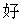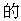 (OK) or '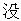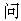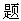 (no problem)', there is no generation. 
Otherwise, the expressions are generated by using the following methods.
</p>
<p>
<strong>Method 1:</strong> Change the positions of adverbials. 
For example, the input: 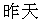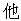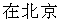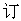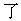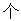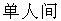 
(Yesterday he reserved a single room in Beijing.) (<i>I</i>-1) is parsed, 
and the phrases ' (yesterday)' and ' (in Beijing)' 
are respectively recognized as two adverbials. 
The positions of these two adverbials are changed in the output expressions as shown below:
</p>
<p>
&nbsp;&nbsp; (a) ;<br>
&nbsp;&nbsp; (b) ;<br>
&nbsp;&nbsp; (c) ;<br>
&nbsp;&nbsp; (d) .<br>
</p>
<p>
<strong>Method 2:</strong> Generate the expressions by using the Head information in the Frame 
and also explain each constituent separately. 
For example, after the analysis of the input <i>I</i>-1, the Head information of the Frame is determined as:
</p>
<p>
&nbsp;&nbsp; <Type> = Declarative Expression;<br>
&nbsp;&nbsp; <Keywords>={/1, /4, /7};<br>
&nbsp;&nbsp; <Tense>=Past;<br>
&nbsp;&nbsp; <Attribute> = Null;<br>
</p>
<p>
According to the Head information, the expression is generated as: . 
Then, the non-null constituents in the Frame are individually explained as follows:
</p>
<p>
&nbsp;&nbsp; (a) ;<br>
&nbsp;&nbsp; (b) ;<br>
&nbsp;&nbsp; (c) 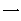.<br>
</p>
<p>
<strong>Method 3:</strong> Change the interrogative expression by using fixed patterns. 
For example, an interrogative expression like '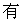X' 
may be changed into 'X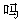', 
and '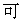/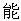X' may be changed into 
'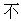/X' 
or 'X'. 
Here, 'X' is any word, phrase, or even a simple clause.
</p>
<p>
<strong>Method 4:</strong> Generate expressions by using phrase based patterns. 
Here, we assume that the input has already been parsed into phrases, 
so that phrase based patterns may be extracted to generate other expressions of the input, 
e.g., from the sentence 
'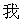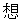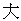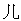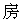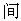 
(I want a bigger room.)', we may extract the following patterns:
</p>
<p>
&nbsp;&nbsp; VANP<br>
&nbsp;&nbsp;&nbsp;&nbsp; 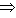 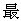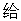VANP<br>
&nbsp;&nbsp;&nbsp;&nbsp;  VANP<br>
&nbsp;&nbsp;&nbsp;&nbsp;  VANP<br>
</p>

<br><br>

<hr size=2>

<a name="chap-4"><h2><font color=#ff0000>4 Experimental Results</font></h2></a>

<p>
At present, the experimental system employs 244 PCFG rules, 
43 sentence type recognition rules, 14 rules for complicated utterance segmentation at the shallow level, 
and a dictionary with 6,500 Chinese words extracted from 64,480 utterances. 
Some test results are presented in this section.
</p>

<br><br>

<hr size=2>

<a name="chap-4.1"><h2><font color=#ff0000>4.1 Parsing Results</font></h2></a>

<p>
Here, we mainly test the effect of the time phrase and quantifier recognizer on the phrase parser by using 54 utterances, 
in which 89 time phrases or numerals are contained. 
<i>Table</i> 2 shows the parsing results 
both when the time and numeral phrases are pre-processed (Case 1) and not pre-processed (Case 2).
</p>

<p>
<div align=center><strong><i>
Table 2. Parsing Results
</i></strong></div>
<table border=3 cellpadding=1 cellspacing=1 align=center>
<tr align=center><td></td><td>Case 1</td><td>Case 2</td></tr>
<tr align=center><td align=left>Output Phrase</td><td>164</td><td>148</td></tr>
<tr align=center><td align=left>Correct</td><td>147</td><td>123</td></tr>
<tr align=center><td align=left>Correct Ratio</td><td>89.6%</td><td>83.1%</td></tr>
</table>
</p>

<p>
From the table we can see that the parsing accuracy improved 6.5% by using the time and numeral phrase recognizer.
</p>

<br><br>

<hr size=2>

<a name="chap-4.2"><h2><font color=#ff0000>4.2 Dependency Analysis Results</font></h2></a>

<p>
The dependency analyzer was tested by using 100 utterances, which include 107 simple sentences. 
The analysis results are divided into two types. 
The first type is the completely correct results. 
If any relation is analyzed incorrectly, the result belongs to the second type. 
The test results show that 61 simple sentences were analyzed complete correctly. 
This number amounts to about 57% of the total input. 
On the other hand, 46 simple sentences were analyzed incorrectly, which was about 43% of the total input. 
The wrong results could be attributed to three reasons: 
(a) wrong parsing results, (b) wrong word segmentation, and (c) wrong dependency analysis. 
<i>Table</i> 3 gives the distribution of the three error types. 
The worse parsing result is clearly the main cause of incorrect dependency analysis.
</p>

<p>
<div align=center><strong><i>
Table 3. Errors Distribution
</i></strong></div>
<table border=3 cellpadding=1 cellspacing=1 align=center>
<tr align=center><td></td><td>(a)</td><td>(b)</td><td>(c)</td></tr>
<tr align=center><td align=left>Number</td><td>38</td><td>4</td><td>4</td></tr>
<tr align=center><td align=left>Ratio (%)</td><td>82.6</td><td>8.7</td><td>8.7</td></tr>
</table>
</p>

<br><br>

<hr size=2>

<a name="chap-4.3"><h2><font color=#ff0000>4.3 Paraphrasing Results</font></h2></a>

<p>
The entire paraphrasing system was tested by using the same 100 input utterances mentioned above. 
Sixty simple sentences were not paraphrased, and 47 simple sentences were paraphrased into 90 expressions. 
That is, one simple sentence was paraphrased into 1.91 possible expressions on average. 
The paraphrased results are divided into three types: (A) the results are correct and well expressed, 
(B) the results are understandable and acceptable, and (C) the results are wrong. 
Table 4 presents the three types of paraphrased results.
</p>

<p>
<div align=center><strong><i>
Table 4. Paraphrasing Results
</i></strong></div>
<table border=3 cellpadding=1 cellspacing=1 align=center>
<tr align=center><td></td><td>(A)</td><td>(B)</td><td>(C)</td></tr>
<tr align=center><td align=left>Number</td><td>56</td><td>14</td><td>20</td></tr>
<tr align=center><td align=left>Ratio (%)</td><td>62.2</td><td>15.6</td><td>22.2</td></tr>
</table>
</p>

<p>
Table 4 shows that about 77.8% of the paraphrased results were good or acceptable. 
The wrong results were mainly caused by dependency analysis errors.
</p>

<br><br>

<hr size=2>

<a name="chap-5"><h2><font color=#ff0000>5 Conclusion</font></h2></a>

<p>
Chinese paraphrasing is a new research effect, although many of the techniques employed in our approach are not new. 
Although the performance of our experimental system is not yet satisfactory, 
the preliminary results have given us confidence in our development of a practical paraphraser for SLT systems. 
We believe that the ideas proposed in this paper are beneficial not only for paraphrasing tasks 
but also for robust spoken language understanding, information extraction, and other related tasks.
</p>
<p>
However, the approach faces many complicated problems, 
including robust parsing, dependency analysis, and natural language generation. 
The following two problems remain for further research: 
(1) How to judge whether the generated results are simpler and better formed than the input at the very least, 
they should not be worse than the input; 
and (2) How to rank the generated results and then output the 'best' result to the transfer (translation) module.
</p>

<br><br>

<hr size=2>

<a name="chap-6"><h2><font color=#ff0000>6 Acknowledgements</font></h2></a>

<p>
The authors specially thank professor Shiwen Yu, professor Fuji Ren, Dr. Kiyonori Ohtake, 
and Ms. Lan Yao for their very useful help.
</p>

<br><br>

<hr size=2>

<a name="ref"><h2><font color=#ff0000>References</font></h2></a>

<p>
<dl compact>
<dt><a name="ref1">Boguslavsky, Igor, Nadezhda Frid et al. 2000. </a>
<dd>Creating a Universal Networking Language Module within an Advanced NLP System.
	<i>Proceedings of the 18th International Conference on Computational Linguistics (COLING)</i>, 83-89.
	<br><br>
<dt><a name="ref2">Chandrasekar, R., Christine Doran, and B. Srinivas. 1996. </a>
<dd>Motivations and Methods for Text Simplification. 
	<i>Proceedings of the 16th International Conference on Computational Linguistics (COLING)</i>, 1041-1044.
	<br><br>
<dt><a name="ref3">Dras, Mark. 1997. </a>
<dd>Representing Paraphrasing Using Synchronous TAGs. 
	<i>Proceedings of the 35th Annual Meeting of the Association for Computational Linguistics (ACL)</i>, 516-518.
	<br><br>
<dt><a name="ref4">Kondo, Keiko, Satoshi Sato, and Manabu Okumura. 2001. </a>
<dd>Paraphrasing by Case Alternation (in Japanese). 
	<i>Information Processing Society of Japan (IPSJ) Journal</i>. 42(3), 465-477.
	<br><br>
<dt><a name="ref5">Mckeown, Kathleen R. 1983. </a>
<dd>Paraphrasing Questions Using Given and New Information.
	<i>American Journal of Computational Linguistics</i>, 9(1):1-10.
	<br><br>
<dt><a name="ref6">Sato, Satoshi. 1999. </a>
<dd>Automatic Paraphrase of Technical Papers' Titles (in Japanese). 
	<i>Information Processing Society of Japan (IPSJ) Journal</i>. 40(7): 2937-2945.
	<br><br>
<dt><a name="ref7">Xia, Fei. 2000. </a>
<dd>The Part-of-Speech Tagging Guidelines for the Penn Chinese Treebank (3.0).
	http://www.ldc.upenn.edu/ctb/.
	<br><br>
<dt><a name="ref8">Yamamoto, Kazuhide, Satoshi Shirai, Masashi Sakamoto, and Yujie Zhang. 2001.</a>
<dd>SANDGLASS: Twin Paraphrasing Spoken Language Translation. 
	<i>Proceedings of the 19th International Conference on Computer Processing of Oriental Language (ICCPOL)</i>, 
	154-159.
	<br><br>
<dt><a name="ref9">Zhou, Ming. 1999. </a>
<dd>J-Beijing Chinese-Japanese Machine Translation System (in Chinese). 
	<i>Proceedings of National 5th Joint Symposium of Computational Linguistics</i>, 312-319.
	<br><br>
<dt><a name="ref10">Zhou, Qiang. 1999. </a>
<dd>The Chunk Parsing Algorithm for Chinese Language (in Chinese).
	<i>Proceedings of National 5th Joint Symposium of Computational Linguistics</i>, 242-247.
	<br><br>
<dt><a name="ref11">Zong, Chengqing, Yujie Zhang, Kazuhide Yamamoto, Masashi Sakamoto and Satoshi Shirai. </a>
<dd>Paraphrasing Chinese Utterances in Spoken Language Translation System (in Chinese). 
	To appear in proceedings of <i>International Conference of Chinese Computing</i>. Nov., 2001. Singapore.
</dl>

<br><br>

<hr size=2>

<br>

<font color=#ff0000><strong>Footnote</strong></font>

<hr size=2 width=40% align=left>

<a name="fn1"><sup>1</sup></a>
For example,  
(Having taken the keys, he is going upstairs.) (<a href="c35.html#rfn1">Return</a>)

<hr size=2 width=40% align=left>

<a name="fn2"><sup>2</sup></a>
For example,  (I elect him to be chairman.) (<a href="c35.html#rfn2">Return</a>)

<br><br><br><br><br><br><br><br><br><br>
<br><br><br><br><br><br><br><br><br><br>
<br><br><br><br><br><br><br><br><br><br>
<br><br><br><br><br><br><br><br><br><br>
<br><br><br><br><br><br><br><br><br><br>

</body>
</html>
